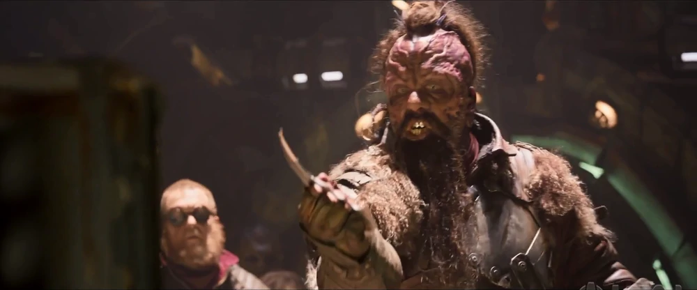

Taserface is the up and coming leader of a band of brigands, who will rule the galaxies with fear and respect.
Tazerface has lived in space most of his life.
"You're the one what killed those men by leading them down the wrong path.
Because you're weak and stupid! It's time for the Ravagers to rise once again to glory with a new captain: Taserface!"
―Taserface to Yondu Udonta